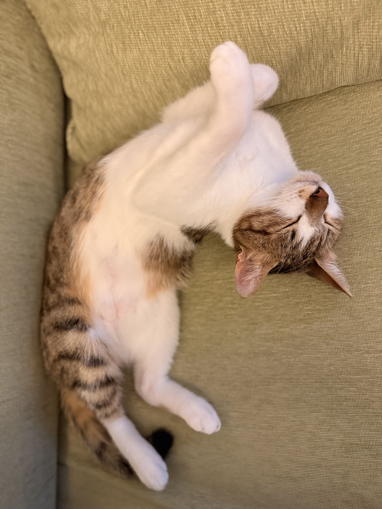
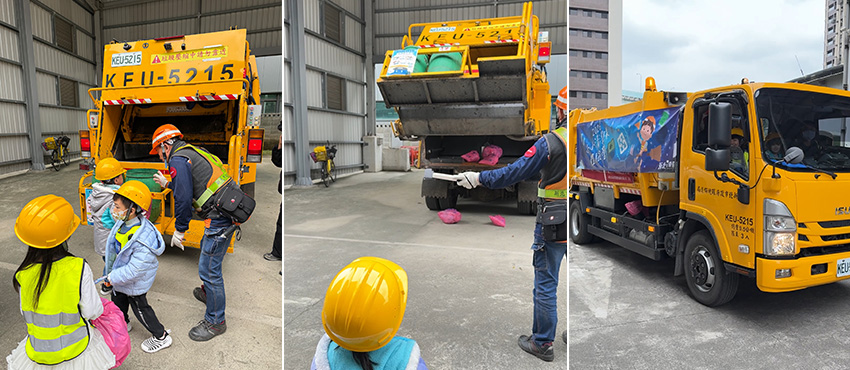
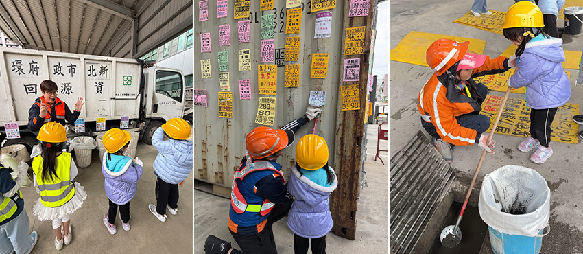

三月帶著孩子一起參加由新北市環保局舉辦的「小小清潔隊員體驗營」。對孩子來說，清潔隊員平常最吸引人的就是街上那台會播放音樂的垃圾車，而這次能夠近距離接觸、甚至親自體驗清潔隊員的工作，讓孩子從報名開始就充滿期待。對家長而言，也是一個難得的機會，讓孩子在遊戲與體驗中認識環境保護的重要。
邊玩邊學！垃圾分類知識大挑戰
活動一開始，主辦單位透過互動方式帶領大家進入主題。首先登場的是即時問答遊戲，讓孩子在輕鬆有趣的氛圍中學習垃圾分類與資源回收的正確觀念。透過螢幕上的題目，小朋友們一邊思考一邊作答，例如「玻璃容器該如何回收？」、「果皮是否可以丟廚餘桶？」等問題。每當答對時，孩子們都開心地歡呼，現場充滿笑聲。這種寓教於樂的方式，讓原本可能較為抽象的環保知識變得生動有趣，也讓孩子在遊戲中自然建立正確的垃圾分類觀念。
飲料杯大變身！親手做永續小盆栽
在知識熱身後，活動轉向手作時光「永續環保小物製作」，孩子們將使用過的飲料杯再利用。先用黏土布置成小盆栽，在杯子裡填入小石頭，再親手播下植物，最後澆水完成。看著原本可能被丟棄的飲料杯，透過簡單的創意與動手製作，變成一個可愛的小盆栽，孩子們都覺得非常新奇。這個活動不僅讓孩子感受到動手做的樂趣，也讓他們理解「資源再利用」的概念，明白許多物品其實可以透過創意延續生命，而不是直接成為垃圾。
 |
重頭戲來了！孩子最愛的垃圾車登場
接著最讓孩子期待的重頭戲，就是「垃圾車體驗」。當熟悉的垃圾車音樂響起時，孩子們立刻興奮起來。除了近距離觀察垃圾車的結構與運作方式之外，在工作人員的引導下，孩子們模擬將垃圾投入車斗，並了解垃圾壓縮的過程。主辦單位還安排了難得的實際搭乘垃圾車體驗，孩子可以坐在垃圾車的副駕駛座，由清潔隊員帶著短程行駛，感受清潔隊員日常工作的情境。當孩子坐上副駕的位置時，臉上充滿驚喜與笑容。對孩子而言，平常只能在路邊看到的垃圾車，現在卻能親自坐在車上體驗，這樣的經驗非常新奇，也留下深刻的印象。
原來回收沒那麼簡單！孩子親手分類體驗
除了垃圾車體驗外，活動也安排了「資源回收分類」的實作體驗。現場準備了不同類型的回收物，讓孩子動手分類紙類、塑膠、金屬與一般垃圾。原本看似簡單的分類，實際操作後才發現其實有很多細節需要注意。例如飲料瓶要先倒空、不同材質要分開回收等等，讓孩子更加了解垃圾分類的重要性。
 |
刮廣告、挖水溝，體會清潔工作的辛勞
活動中還有一個相當有意義的環節，就是「清除違規小廣告」體驗。孩子們拿著刮刀，嘗試把貼在模擬牆面上的小廣告撕掉還需要把殘膠清除。看似簡單的動作，實際操作後才發現並不容易，有些廣告紙黏得很緊，需要耐性與細心才能慢慢刮下來。孩子也開始理解，如果大家隨意張貼廣告，不僅會影響市容，也會增加清潔人員的工作負擔。另外一個有趣的活動是「水溝清淤」。工作人員準備了模擬水溝、泥沙等堵塞物，讓孩子用小工具把水溝裡的雜物清理出來，挖完水溝後站在水溝蓋上感受水車沖洗，透過這樣的體驗，更容易理解保持環境整潔與排水順暢的重要性。
 |
玩得開心，也學會珍惜城市環境
整個活動在輕鬆愉快的氣氛中進行，孩子不僅玩得開心，也學到了許多關於環境保護的知識。透過實作與體驗，認識垃圾分類以及環境維護的重要性，充滿教育意義。尤其是能夠實際坐上垃圾車副駕駛座，讓孩子留下難忘的回憶。這次的體驗孩子們開始理解到，維持城市整潔其實需要很多人的努力與付出，也更加體會清潔隊員工作的辛勞。在日常生活中更願意落實垃圾分類與環保行動，成為守護環境的小小環保尖兵。